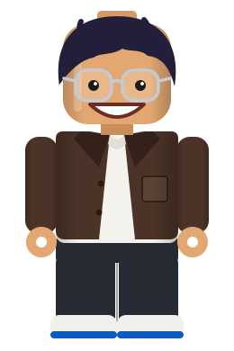

Hi, I'm Paolo
Senior site reliability engineer. I keep the software that 100+ manufacturing plants rely on running, then go home and build more of it.

About me
I'm Paolo, a senior site reliability engineer at a leading global FMCG company. My day job is maintaining the applications and software used by more than 100 manufacturing plants around the world.
Outside work, I keep practicing. Platform engineering is the part I love most, so I run my own lab at home with full-stack observability, and I host my projects on it.
100+
manufacturing plants supported worldwide
Home lab
full-stack observability, running my own projects
What I've built
-
Barangay Real Access
An accessibility map for Brgy. Real in Calamba City, made for travelers with physical disabilities. Pins and lines show ramps, sidewalks, crossings, restrooms and entrances, each with a clear status. It works in English and Filipino, has a list view next to the map, and supports keyboards and screen readers.
-
OpenClaw Local
A self-hosted AI assistant stack I run at home. One FastAPI hub serves chat, finance, nutrition, a calendar and a system and GPU monitor, behind Traefik with HTTPS. I tried it on a local Qwen model through llama.cpp on my RTX 4070, and it can also route to hosted models when a task needs more.
-
Frostbite financial tracker
A personal finance tracker for accounts, categories, income, expenses and transfers, with a Node and SQLite backend served over hardened HTTPS. The repository is private, so there is no code link.
Private repository
Say hello
I like talking about platform engineering, reliability and accessible software. Find me on GitHub or LinkedIn.